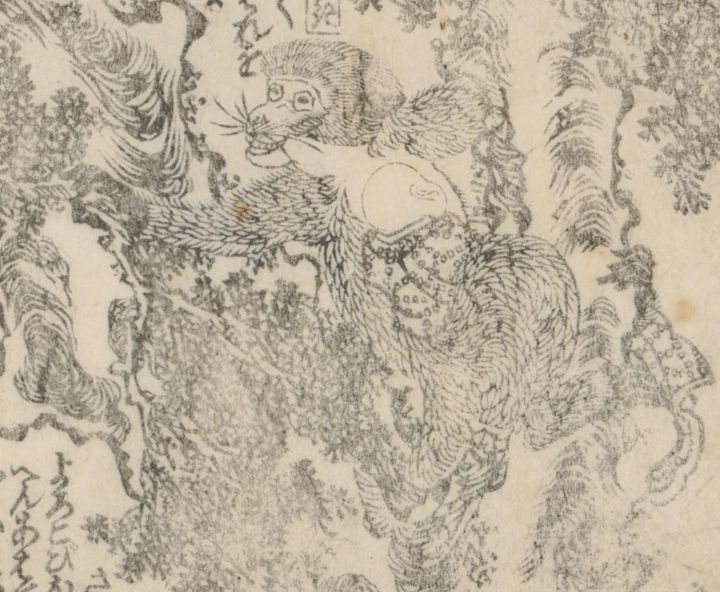

← 图鉴索引

猿が赤子を抱いて木に登っている。
著作者：柳水亭種清作・梅蝶樓國貞画／出典：親書誌：U426_nichibunken_0447：戀車淀翡翠／日付：2017／資源識別子：U426_nichibunken_0447_0007_0000
Copyright (c)2010- International Research Center for Japanese Studies, Kyoto, Japan. All rights reserved.